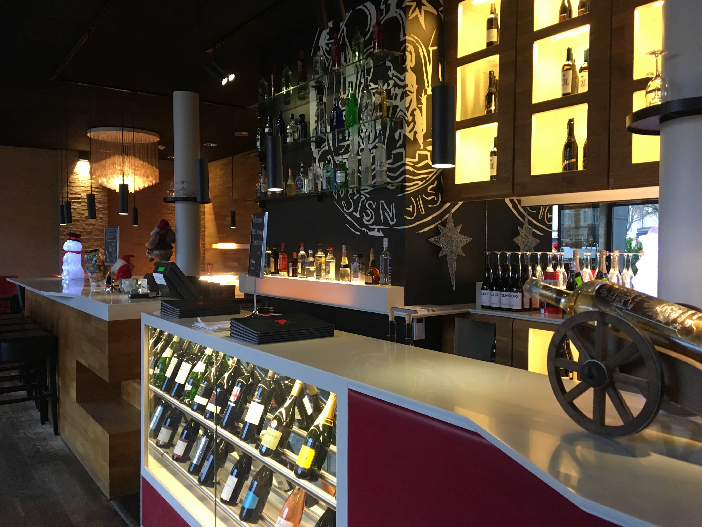

Case 1.3: Responsive webdesign
Café Stiften
Gå til Stiften
Refleksion
Case 1.3 var gruppeprojekt nummer 2, hvor hovedformålet var at producere en responsive hjemmeside, så den kan anvendes på både computer, tablet og telefon. Siden vi skulle producere i denne case, skulle tage udgangspunkt i en selvvalgt virksomhed, som endnu ikke havde en responsive hjemmeside. I vores gruppe valgte vi at producere en hjemmeside for ’Café Stiften’, som er en café i Århus. Virksomheden har en hjemmeside, som ikke er responsive, og en hjemmeside som halter hvad angår design, derfor var det oplagt at producere en ny hjemmeside til denne virksomhed.
Design Case 1.3
I case 1.3 var der rig mulighed for at arbejde med den kritik, som blev givet som respons på case 1.2. I arbejdet med case 1.3 blev der lagt langt større fokus på designproces, end der var gjort ved tidligere cases. Herunder var der udarbejdet mockups af både mobilversion og laptopversion, en grundig logoproces og flere diskussioner frem og tilbage i forhold til hvordan hjemmesiden skulle se ud, for så til sidst, at have et endeligt resultat, som vi kunne kode hjemmesiden ud fra. Hvad angår viden indenfor designfaget var det ikke så forskelligt fra case 1.2, men der hvor de adskiller sig fra hinanden er uden tvivl grundigheden omkring designet. I forhold til case 1.2, var der en tydelig forskel på hvordan det hele forløb, og det viste sig, at på trods af, at man bruger en del længere tid på at designe og lave mockups, så ville det i det store hele stadig tage mindre tid, at få afleveret det endelige produkt, da kodningens resultat er forudbestemt, og dermed skal man blot kode, og ikke længere designe under processen, hvilket i sidste ende resultere i et mere raffineret og flottere design.
Interaktion case 1.3
Som en ny ting i case 1.3, var der to nye krav som skulle opfyldes, at vores hjemmeside skulle designes og kodes ud fra mobile first princippet, samt at hjemmesiden skulle være responsiv. Med de to nye krav, herunder især at lave hjemmesiden responsive medførte, at der skulle en hel del mere kodning til, for at skabe det færdige produkt. Her drog vi fordel af, at vi i forvejen havde udarbejdet færdig mockups af henholdsvis
mobilversionen samt desktop versionen. Den største forandring hvad angår interaktion i denne case, var uden tvivl
hurtigheden af kodningen, forstået på den måde, at bøgerne ikke belv åbnet helt ligeså meget som i case 1.2, fordi man har tilegnet sig mere viden indenfor faget. Herunder er det især ting som skal rykkes fordi de står forkert, generelle placeringer af ting, link til andre html sider, footer elementer og mange andre ting, som case 1.2 har givet en langt større erfaring omkring, og jeg derfra ved hvilke koder der skal bruges.
Kommunikation og virksomhed case 1.3
I forbindelse med case 1.3, var der en del nye elementer i de to fag. Vi foretog som ved alle andre projekter diverse interviews, fik vores produkt testet af andre elever , lavede personaser osv. Men i projekt 1.3, skulle vi endvidere, lave noget der hedder kortsortering, som er den af det der hedder informationsarkitektur. Kortsorteringen, er en simpel model, hvor man ”bygger” sin navigation af hjemmesiden i små sedler, hvorefter man tester den på nogle personer, og beder dem lægge menupunkterne ud, hvor de synes de hører til. På den måde kan man opfange hvad kunden tænker og dermed gør det mere intuitivt for brugeren. Det er en ting, som gav rigtig god mening, og en utrolig smart måde, at få opsat sin orden på hjemmesiden igennem. Udover dette var den eneste primære forskel fra de tidligere cases endnu engang, at vi havde fået en del mere erfaring inden for fagene, og derfor også var i stand til at bruge metoder og redskaber på en mere effektiv måde end tidligere.
Konklusion for case 1.3
Case 1.3 var det første projekt, hvor vi arbejdede i gruppe med en langt større viden end før. Dette kunne fornemmes og ses, både via hastigheden på produktionen af hjemmesiden, designprocessen og ikke mindst interviews og analyser af disse. Man kan tydeligt mærke, at vi er ved at blive rutineret indenfor fremgangsmåderne i de forskellige fag, og ingen af fagene virker ”skræmmende”, på samme måde som de godt kunne gøre førhen. På trods af det hele går hurtigere, så lærer jeg stadig ligeså meget, især fordi hver case har fokus på specifikke elementer, i case 1.3 var dette responsive webdesign, som jeg før case 1.3 stort set ikke kunne finde ud af, hvor jeg nu er i stand til at skabe en responsive hjemmeside.